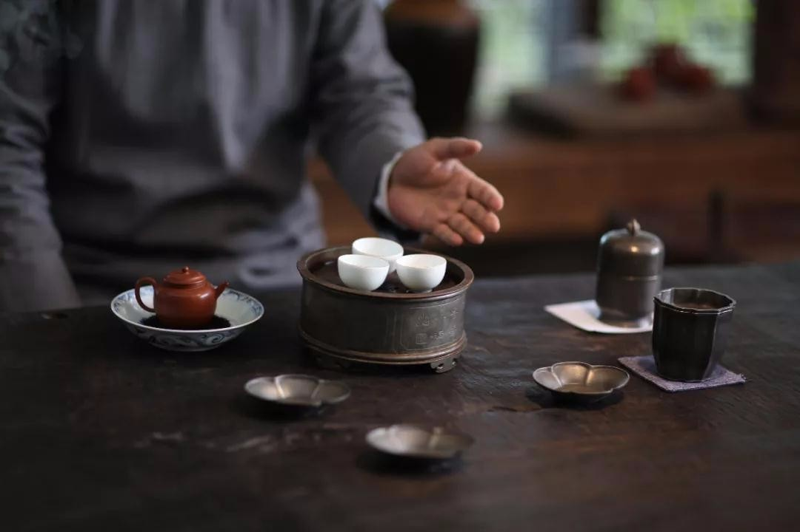

潮汕饮食文化核心

../images/chaoshan_culture.jpg
潮汕饮食文化融合了海洋文化和中原文化的特点，形成了“精细、讲究、仪式感”的饮食风格，核心体现在以下几个方面：
- 功夫茶文化：潮汕人“不可一日无茶”，功夫茶讲究“小壶小杯”，冲泡流程繁琐（洗茶、冲茶、分茶），注重茶的香气和口感，是潮汕人社交的重要方式。
- 宴席礼仪：潮汕宴席（如婚宴、寿宴）菜品丰富，讲究“头盘、热菜、汤品、甜品”的顺序，卤鹅、鱼丸、蚝烙等经典菜品必不可少，体现对宾客的尊重。
- 小吃文化：潮汕小吃种类繁多（如蚝烙、牛肉丸、鼠壳粿、红桃粿），多为街头巷尾的手工美食，兼具美味和烟火气，是潮汕饮食的重要组成部分。
- 海鲜饮食观：潮汕濒临南海，海鲜资源丰富，形成了“现捞现做、清淡烹饪”的饮食观，认为新鲜食材无需复杂调味，才能凸显本味。
- 卤味传承：潮汕卤味是家族传承的手艺，老卤汁被视为“传家宝”，越陈越香，卤制的鹅、鸭、鸡蛋等菜品，是潮汕人日常饮食和节日必备。